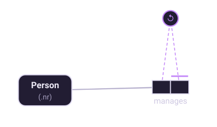
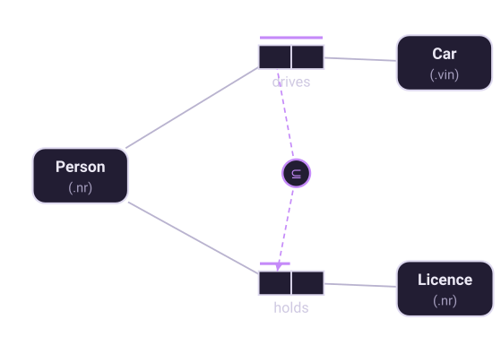

Chapter 7 of 10
The other constraints
Value, frequency, ring and set-comparison constraints — the rules that catch the awkward cases.
Value constraints
A value constraint lists the values an object type may take, as an enumeration, a range, or a mixture of both:
{'M', 'F'} an enumeration
{1..7} a range
{0.., 'unknown'} open-ended, plus a discrete valueThey are for genuinely closed sets — sex codes, a 1-to-7 rating scale, the three academic ranks. Resist using them for lists that change: if the business adds a rank next year, a value constraint means a schema change, whereas modeling Rank as an entity type with its own fact type means adding a row. Halpin's own example makes this trade explicitly, storing a rank-to-access-level rule as data precisely so it can be updated without recompiling the schema.
Frequency constraints
A frequency constraint generalizes uniqueness. Where a uniqueness constraint says "at most once", a frequency constraint says "at least n", "at most n", or "between n and m times". Writing 2 beside a role means each object appearing in that role appears there exactly twice — the constraint Halpin uses to say that each department has both a teaching budget and a research budget.
A frequency of exactly 1 is a uniqueness constraint; use the uniqueness bar instead, and Factum will warn you if you do not.
Ring constraints
When both roles of a fact type are played by the same object type, the fact type forms a ring, and a family of constraints becomes available that says how the relation may loop back on itself.

| Ring type | Says | Typical use |
|---|---|---|
| Irreflexive | No object relates to itself | manages, is parent of |
| Asymmetric | If a relates to b, b does not relate to a | is older than |
| Antisymmetric | Two distinct objects cannot relate both ways | reports to |
| Symmetric | If a relates to b, then b relates to a | is married to, is a sibling of |
| Transitive | a→b and b→c implies a→c | is an ancestor of |
| Intransitive | a→b and b→c implies not a→c | is the parent of |
| Acyclic | No cycles of any length | part-of hierarchies, org charts |
| Reflexive | Each object playing the role relates to itself | rare, formal uses |
Acyclic is the one that earns its keep most often, and it is also the one no relational
CHECK constraint can enforce. Recording it in the conceptual model is worthwhile even
when the database cannot hold it — the rule is now written down where an implementer will see it,
which is exactly why Factum carries unenforceable constraints into generated scripts as
comments.
Set-comparison constraints
These compare the populations of two role sequences, and come in three flavours.

- Subset — the population of the first sequence must be included in the second. If a Person drives a Car then that Person holds a Licence.
- Exclusion — the populations must not overlap. No Person both owns and leases the same Car.
- Equality — the populations must be identical, which is a pair of subset constraints, one in each direction. A Person has a home phone if and only if that Person heads a Department.
The compared roles must be compatible: played by the same object type, or by types sharing a common supertype. Comparing a Person role with a Company role is meaningless, and Factum reports it as an error.
Two combinations have their own names. Exclusion over roles that are also disjunctively mandatory is an exclusive-or: exactly one of them, never both, never neither — the tenured or contracted example from chapter 6. And a subset constraint whose source roles are mandatory makes the target roles mandatory by implication, which Factum flags, because a constraint you did not intend to add is worth knowing about.
Cardinality constraints
Where a frequency constraint bounds how often an object plays a role, a cardinality constraint bounds how many objects there are: there are at most 10 Rooms. It is the least-used constraint in the family, and worth reaching for only when the bound is a genuine business rule rather than today's data.
Alethic and deontic
Every constraint in ORM 2 carries a modality. An alethic constraint cannot be violated — it is true by necessity, and the system should make violation impossible. A deontic constraint should not be violated, but can be: an obligation rather than a necessity.
It is necessary that each Person was born on exactly one Date.
It is obligatory that each Employee completes safety training.The distinction matters because systems that model obligations as necessities cannot record reality. If your database refuses to store an employee who has not completed training, the business will find a way around your database. Marking the rule deontic says: record it, flag it, do not prevent it.